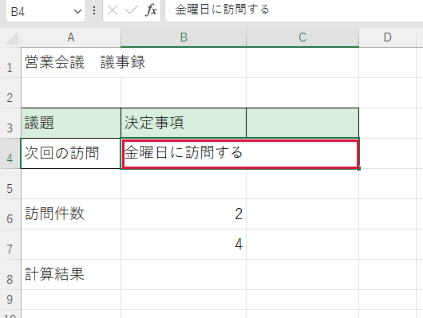
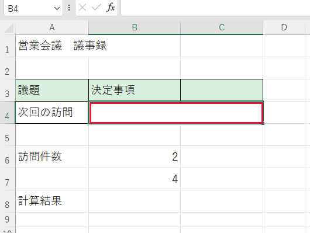

操作を間違えた・元に戻したい


入力中か、すでに確定したかによって取り消し方が変わります。
操作手順
- まだ文字の中に縦線がある場合は Esc を押します。今回の入力が取り消されます。
- すでに確定した操作を戻す場合は Ctrl＋Z を1回押します。直前の変更が戻ります。
- 戻しすぎた場合は、別の変更をする前に Ctrl＋Y を1回押します。取り消した変更が再び反映されます。
できたか確認
直したかった欄とその周囲を見比べてください。
注意点
連続で押すと別の操作も戻ります。ブックを閉じた後など、元に戻せない場合があります。